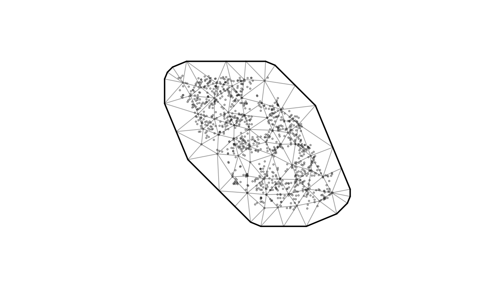
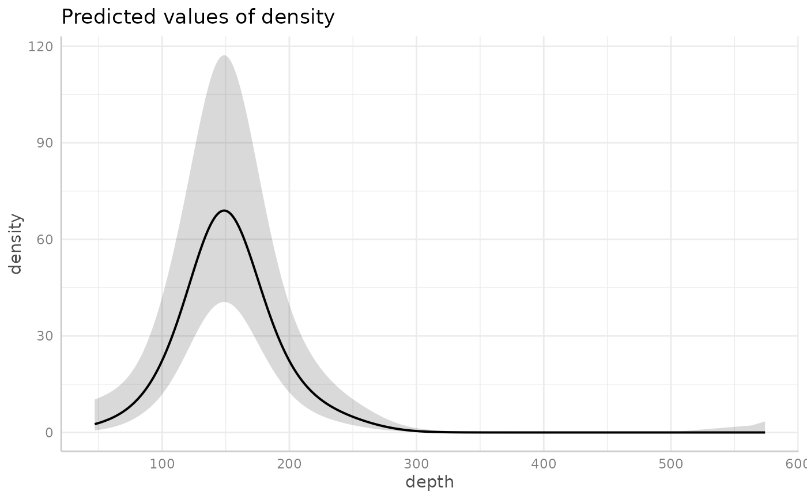
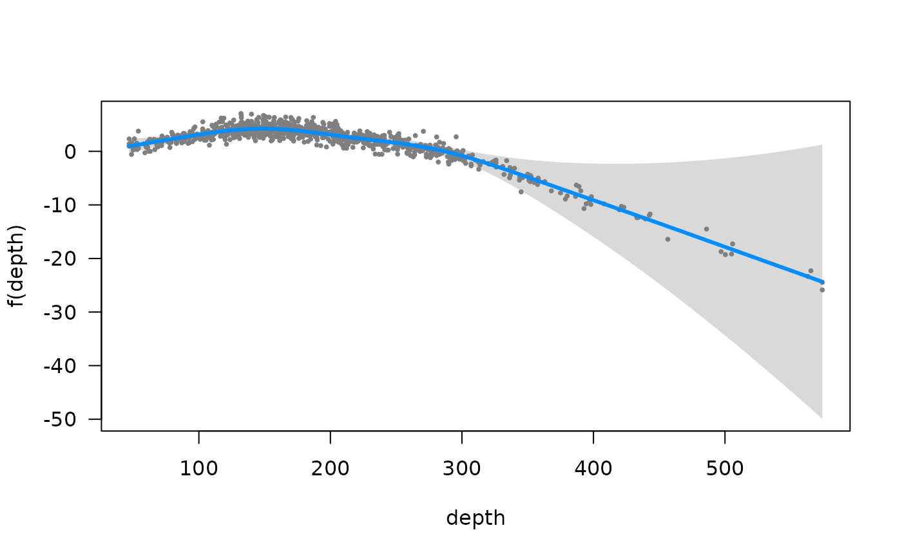
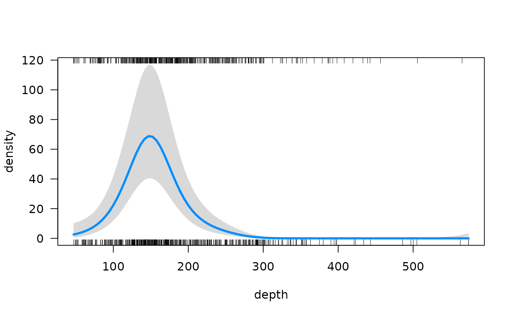
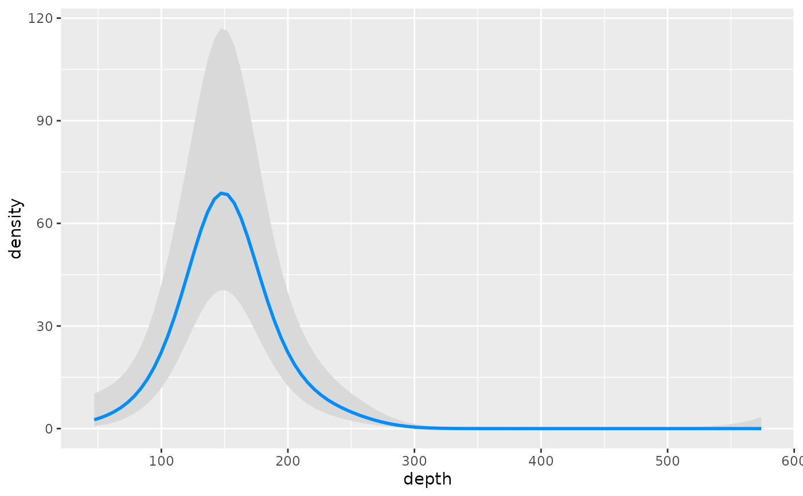

Fit a spatial or spatiotemporal generalized linear mixed effects model (GLMM) with the TMB (Template Model Builder) R package. Spatial and spatiotemporal random fields are approximated using the SPDE (stochastic partial differential equation) approach, which allows for efficient modeling of data that are correlated in space and/or time. See the model description vignette for details.
Usage
sdmTMB(
formula,
data,
mesh,
time = NULL,
family = gaussian(link = "identity"),
spatial = c("on", "off"),
spatiotemporal = c("iid", "ar1", "rw", "off"),
share_range = TRUE,
time_varying = NULL,
time_varying_type = c("rw", "rw0", "ar1"),
spatial_varying = NULL,
weights = NULL,
offset = NULL,
extra_time = NULL,
reml = FALSE,
silent = TRUE,
anisotropy = FALSE,
control = sdmTMBcontrol(),
priors = sdmTMBpriors(),
knots = NULL,
bayesian = FALSE,
previous_fit = NULL,
do_fit = TRUE,
do_index = FALSE,
predict_args = NULL,
index_args = NULL,
experimental = NULL
)Arguments
- formula
Model formula. IID random intercepts and slopes are possible using lme4 syntax, e.g.,
+ (1 | g)or+ (0 + depth | g)or+ (1 + depth | g)wheregis a column of class character or factor representing groups. Penalized splines are possible via mgcv withs(). Optionally a list for delta (hurdle) models. See examples and details below.- data
A data frame.
- mesh
An object from
make_mesh().- time
An optional time column name (as character). Can be left as
NULLfor a model with only spatial random fields; however, if the data are actually spatiotemporal and you wish to useget_index()orget_cog()downstream, supply the time argument.- family
The family and link. Supports
gaussian(),Gamma(),binomial(),poisson(),Beta(),betabinomial(),nbinom2(),truncated_nbinom2(),nbinom1(),truncated_nbinom1(),censored_poisson(),gamma_mix(),lognormal_mix(),student(),tweedie(), andgengamma(). Delta/hurdle models (for zero-inflated data) include:delta_beta(),delta_gamma(),delta_gamma_mix(),delta_lognormal_mix(),delta_lognormal(), anddelta_truncated_nbinom2(). See the delta-model vignette for details. For binomial family options, see 'Binomial families' in the Details section below.- spatial
Estimate spatial random fields? Options are
'on'/'off'orTRUE/FALSE. Optionally, a list for delta models, e.g.list('on', 'off').- spatiotemporal
Estimate the spatiotemporal random fields as
'iid'(independent and identically distributed; default), stationary'ar1'(first-order autoregressive), a random walk ('rw'), or fixed at 0'off'. Will be set to'off'iftime = NULL. If a delta model, can be a list. E.g.,list('off', 'ar1'). Guidance: Use'iid'if temporal correlation is negligible or already accounted for in fixed effects;'ar1'if correlation between consecutive time steps decays gradually;'rw'if changes between time steps are cumulative (each step builds on the last). If the AR1 correlation coefficient (rho) is estimated close to 1 (say > 0.99), consider switching to'rw'. See the model description vignette for mathematical details. Capitalization is ignored.TRUEgets converted to'iid'andFALSEgets converted to'off'.Logical: estimate a shared spatial and spatiotemporal range parameter (
TRUE, default) or independent range parameters (FALSE). If a delta model, can be a list. E.g.,list(TRUE, FALSE).- time_varying
An optional one-sided formula describing covariates that should be modelled as a time-varying process. Set the type of process with
time_varying_type. See the help fortime_varying_typefor warnings about modelling the first time step. Structure shared in delta models.- time_varying_type
Type of time-varying process to apply to
time_varyingformula. Options:'rw'(random walk, default),'rw0'(random walk with mean-zero prior on first time step), or'ar1'(autoregressive, for coefficients that fluctuate around a mean). For'rw0'and'ar1', the coefficient starts at zero in the first time step. For'rw'(default), the first time step is estimated separately—in this case, avoid including the same covariates in bothformulaandtime_varyingto prevent non-identifiability (use~ 0or~ -1in at least one). Structure shared in delta models.- spatial_varying
An optional one-sided formula of coefficients that should vary in space as random fields. Allows the effect of a covariate to differ spatially. You likely want to include the same variable as a fixed effect in
formulato estimate the average effect—the spatial field then represents deviations from that average (since it has mean zero). For example, useformula = y ~ depthandspatial_varying = ~ 0 + depthto model an average depth effect plus spatially varying deviations. If a (scaled) time column is used, this creates a local-time-trend model. See doi:10.1111/ecog.05176 and the spatial trends vignette. Predictors should usually be centered to have mean zero and standard deviation approximately 1. The spatial intercept is controlled by thespatialargument; setspatial = 'on'or'off'to include or exclude it. For factor predictors, ifspatial_varyingexcludes the intercept (~ 0or~ -1), setspatial = 'off'to match. Structure must be shared in delta models.- weights
A numeric vector representing optional likelihood weights for the conditional model. Implemented as in glmmTMB: weights do not have to sum to one and are not internally modified. Can also be used for trials with the binomial family; the
weightsargument needs to be a vector and not a name of the variable in the data frame. See the Details section below.- offset
A numeric vector representing the model offset or a character value representing the column name of the offset. In delta/hurdle models, this applies only to the positive component. Usually a log transformed variable.
- extra_time
Optional extra time slices (e.g., years) to include for interpolation or forecasting with the predict function. See the Details section below.
- reml
Logical: use REML (restricted maximum likelihood) estimation rather than maximum likelihood? REML accounts for uncertainty in estimating fixed effects and can reduce bias in variance parameter estimates, but prevents likelihood-based model comparison (e.g., AIC) between models with different fixed effects. Use
TRUEif your focus is on random effect variance parameters; useFALSE(default) if comparing models with different fixed effects or performing index standardization.- silent
Silent or include optimization details? Helpful to set to
FALSEfor models that take a while to fit.- anisotropy
Logical: allow for anisotropy (spatial correlation that is directionally dependent)? See
plot_anisotropy(). Must be shared across delta models.- control
Optimization control options via
sdmTMBcontrol().- priors
Optional penalties/priors via
sdmTMBpriors(). Must currently be shared across delta models.- knots
Optional named list containing knot values to be used for basis construction of smoothing terms. See
mgcv::gam()andmgcv::gamm(). E.g.,s(x, bs = 'cc', k = 4), knots = list(x = c(1, 2, 3, 4))- bayesian
Logical indicating if the model will be passed to tmbstan. If
TRUE, Jacobian adjustments are applied to account for parameter transformations when priors are applied.- previous_fit
A previously fitted sdmTMB model to initialize the optimization with. Can greatly speed up fitting. Note that the model must be set up exactly the same way. However, the data and
weightsarguments can change, which can be useful for cross-validation.- do_fit
Fit the model (
TRUE) or return the processed data without fitting (FALSE)?- do_index
Do index standardization calculations while fitting? Saves memory and time when working with large datasets or projection grids since the TMB object doesn't have to be rebuilt with
predict.sdmTMB()andget_index(). IfTRUE, thenpredict_argsmust have anewdataelement supplied andareacan be supplied toindex_args. Most users can ignore this option. The fitted object can be passed directly toget_index().- predict_args
A list of arguments to pass to
predict.sdmTMB()ifdo_index = TRUE. Most users can ignore this option.- index_args
A list of arguments to pass to
get_index()ifdo_index = TRUE. Currently, onlyareais supported. Bias correction can be done when callingget_index()on the resulting fitted object. Most users can ignore this option.- experimental
A named list for esoteric or in-development options. Here be dragons.
Value
An object (list) of class sdmTMB. Useful elements include:
sd_report: output fromTMB::sdreport()gradients: marginal log likelihood gradients with respect to each fixed effectmodel: output fromstats::nlminb()data: the fitted dataspde: the object that was supplied to themeshargumentfamily: the family object, which includes the inverse link function asfamily$linkinv()tmb_params: The parameters list passed toTMB::MakeADFun()tmb_map: The 'map' list passed toTMB::MakeADFun()tmb_data: The data list passed toTMB::MakeADFun()tmb_obj: The TMB object created byTMB::MakeADFun()
Details
Model description
sdmTMB fits GLMMs with spatial and/or spatiotemporal random fields, which account for correlation in the data due to spatial proximity, or alternatively, latent spatial and spatiotemporal effects. Spatial fields represent consistent spatial patterns, while spatiotemporal fields represent spatial patterns that vary over time. See the model description vignette for mathematical details and the paper: doi:10.1101/2022.03.24.485545
Binomial families
Following the structure of stats::glm() and glmmTMB, a binomial
family can be specified in one of 4 ways: (1) the response may be a factor
(and the model classifies the first level versus all others), (2) the
response may be binomial (0/1), (3) the response can be a matrix of form
cbind(success, failure), and (4) the response may be the observed
proportions, and the 'weights' argument is used to specify the Binomial size
(N) parameter (prob ~ ..., weights = N).
Smooth terms
Smooth terms can be included following GAMs (generalized additive models)
using + s(x), which implements a smooth from mgcv::s(). sdmTMB uses
penalized smooths, constructed via mgcv::smooth2random(). This is a similar
approach implemented in gamm4 and brms, among other packages.
Within these smooths, the same syntax commonly used in mgcv::s() or
mgcv::t2() can be applied, e.g. 2-dimensional smooths may be constructed
with + s(x, y) or + t2(x, y); smooths can be specific to various factor
levels, + s(x, by = group); the basis function dimensions may be specified,
e.g. + s(x, k = 4); and various types of splines may be constructed such as
cyclic splines to model seasonality (perhaps with the knots argument also
be supplied).
Threshold models
A linear break-point relationship for a covariate can be included via
+ breakpt(variable) in the formula, where variable is a single covariate
corresponding to a column in data. In this case, the relationship is linear
up to a point and then constant (hockey-stick shaped).
Similarly, a logistic-function threshold model can be included via
+ logistic(variable). This option models the relationship as a logistic
function of the 50% and 95% values. This is similar to length- or size-based
selectivity in fisheries, and is parameterized by the points at which f(x) =
0.5 or 0.95. See the
threshold vignette.
Note that only a single threshold covariate can be included and the same covariate is included in both components for the delta families.
Extra time: forecasting or interpolating
Extra time slices (e.g., years) can be included for interpolation or
forecasting with the predict function via the extra_time argument. The
predict function requires all time slices to be defined when fitting the
model to ensure the various time indices are set up correctly. Be careful if
including extra time slices that the model remains identifiable. For example,
including + as.factor(year) in formula will render a model with no data
to inform the expected value in a missing year. sdmTMB() makes no attempt
to determine if the model makes sense for forecasting or interpolation. The
options time_varying, spatiotemporal = "rw", spatiotemporal = "ar1",
or a smoother on the time column provide mechanisms to predict over missing
time slices with process error.
extra_time can also be used to fill in missing time steps for the purposes
of a random walk or AR(1) process if the gaps between time steps are uneven.
extra_time can include only extra time steps or all time steps including
those found in the fitted data. This latter option may be simpler.
Regularization and priors
You can achieve regularization via penalties (priors) on the fixed effect
parameters. See sdmTMBpriors(). You can fit the model once without
penalties and look at the output of print(your_model) or tidy(your_model)
or fit the model with do_fit = FALSE and inspect
head(your_model$tmb_data$X_ij[[1]]) if you want to see how the formula is
translated to the fixed effect model matrix. Also see the
Bayesian vignette.
Delta/hurdle models
Delta models (also known as hurdle models) can be fit as two separate models
or at the same time by using an appropriate delta family. E.g.:
delta_gamma(),
delta_beta(),
delta_lognormal(), and
delta_truncated_nbinom2().
If fit with a delta family, by default the formula, spatial, and spatiotemporal
components are shared. Some elements can be specified independently for the two models
using a list format. These include formula, spatial, spatiotemporal,
and share_range. The first element of the list is for the binomial component
and the second element is for the positive component (e.g., Gamma).
Other elements must be shared for now (e.g., spatially varying coefficients,
time-varying coefficients). Furthermore, there are currently limitations if
specifying two formulas as a list: the two formulas cannot have smoothers or
threshold effects. For now, these must be specified
through a single formula that is shared across the two models.
The main advantage of specifying such models using a delta family (compared
to fitting two separate models) is (1) coding simplicity and (2) calculation
of uncertainty on derived quantities such as an index of abundance with
get_index() using the generalized delta method within TMB. Also, selected
parameters can be shared across the models.
See the delta-model vignette.
Index standardization
For index standardization, you may wish to include 0 + as.factor(year)
(or whatever the time column is called) in the formula. See a basic
example of index standardization in the relevant
package vignette.
You will need to specify the time argument. See get_index().
References
Main reference introducing the package to cite when using sdmTMB:
Anderson, S.C., E.J. Ward, P.A. English, L.A.K. Barnett. 2022. sdmTMB: an R package for fast, flexible, and user-friendly generalized linear mixed effects models with spatial and spatiotemporal random fields. bioRxiv 2022.03.24.485545; doi:10.1101/2022.03.24.485545 .
Reference for local trends:
Barnett, L.A.K., E.J. Ward, S.C. Anderson. 2021. Improving estimates of species distribution change by incorporating local trends. Ecography. 44(3):427-439. doi:10.1111/ecog.05176 .
Further explanation of the model and application to calculating climate velocities:
English, P., E.J. Ward, C.N. Rooper, R.E. Forrest, L.A. Rogers, K.L. Hunter, A.M. Edwards, B.M. Connors, S.C. Anderson. 2021. Contrasting climate velocity impacts in warm and cool locations show that effects of marine warming are worse in already warmer temperate waters. Fish and Fisheries. 23(1) 239-255. doi:10.1111/faf.12613 .
Discussion of and illustration of some decision points when fitting these models:
Commander, C.J.C., L.A.K. Barnett, E.J. Ward, S.C. Anderson, T.E. Essington. 2022. The shadow model: how and why small choices in spatially explicit species distribution models affect predictions. PeerJ 10: e12783. doi:10.7717/peerj.12783 .
Application and description of threshold/break-point models:
Essington, T.E., S.C. Anderson, L.A.K. Barnett, H.M. Berger, S.A. Siedlecki, E.J. Ward. 2022. Advancing statistical models to reveal the effect of dissolved oxygen on the spatial distribution of marine taxa using thresholds and a physiologically based index. Ecography. 2022: e06249 doi:10.1111/ecog.06249 .
Application to fish body condition:
Lindmark, M., S.C. Anderson, M. Gogina, M. Casini. Evaluating drivers of spatiotemporal individual condition of a bottom-associated marine fish. bioRxiv 2022.04.19.488709. doi:10.1101/2022.04.19.488709 .
Several sections of the original TMB model code were adapted from the VAST R package:
Thorson, J.T. 2019. Guidance for decisions using the Vector Autoregressive Spatio-Temporal (VAST) package in stock, ecosystem, habitat and climate assessments. Fish. Res. 210:143–161. doi:10.1016/j.fishres.2018.10.013 .
Code for the family R-to-TMB implementation, selected parameterizations of
the observation likelihoods, general package structure inspiration, and the
idea behind the TMB prediction approach were adapted from the glmmTMB R
package:
Brooks, M.E., K. Kristensen, K.J. van Benthem, A. Magnusson, C.W. Berg, A. Nielsen, H.J. Skaug, M. Maechler, B.M. Bolker. 2017. glmmTMB Balances Speed and Flexibility Among Packages for Zero-inflated Generalized Linear Mixed Modeling. The R Journal, 9(2):378-400. doi:10.32614/rj-2017-066 .
Implementation of geometric anisotropy with the SPDE and use of random field GLMMs for index standardization:
Thorson, J.T., A.O. Shelton, E.J. Ward, H.J. Skaug. 2015. Geostatistical delta-generalized linear mixed models improve precision for estimated abundance indices for West Coast groundfishes. ICES J. Mar. Sci. 72(5): 1297–1310. doi:10.1093/icesjms/fsu243 .
Examples
library(sdmTMB)
# Build a mesh to implement the SPDE approach:
mesh <- make_mesh(pcod_2011, c("X", "Y"), cutoff = 20)
# - this example uses a fairly coarse mesh so these examples run quickly
# - 'cutoff' is the minimum distance between mesh vertices in units of the
# x and y coordinates
# - 'cutoff = 10' might make more sense in applied situations for this dataset
# - or build any mesh in 'fmesher' and pass it to the 'mesh' argument in make_mesh()`
# - the mesh is not needed if you will be turning off all
# spatial/spatiotemporal random fields
# Quick mesh plot:
plot(mesh)

# Fit a Tweedie spatial random field GLMM with a smoother for depth:
fit <- sdmTMB(
density ~ s(depth),
data = pcod_2011, mesh = mesh,
family = tweedie(link = "log")
)
fit
#> Spatial model fit by ML ['sdmTMB']
#> Formula: density ~ s(depth)
#> Mesh: mesh (isotropic covariance)
#> Data: pcod_2011
#> Family: tweedie(link = 'log')
#>
#> Conditional model:
#> coef.est coef.se
#> (Intercept) 2.16 0.34
#> sdepth 1.94 3.13
#>
#> Smooth terms:
#> Std. Dev.
#> sd__s(depth) 13.07
#>
#> Dispersion parameter: 13.68
#> Tweedie p: 1.58
#> Matérn range: 16.84
#> Spatial SD: 2.20
#> ML criterion at convergence: 2937.789
#>
#> See ?tidy.sdmTMB to extract these values as a data frame.
# Extract coefficients:
tidy(fit, conf.int = TRUE)
#> # A tibble: 2 × 5
#> term estimate std.error conf.low conf.high
#> <chr> <dbl> <dbl> <dbl> <dbl>
#> 1 (Intercept) 2.16 0.340 1.50 2.83
#> 2 sdepth 1.94 3.13 -4.19 8.07
tidy(fit, effects = "ran_par", conf.int = TRUE)
#> # A tibble: 5 × 5
#> term estimate std.error conf.low conf.high
#> <chr> <dbl> <dbl> <dbl> <dbl>
#> 1 range 16.8 13.7 3.40 83.3
#> 2 phi 13.7 0.663 12.4 15.0
#> 3 sigma_O 2.20 1.23 0.735 6.59
#> 4 tweedie_p 1.58 0.0153 1.55 1.61
#> 5 sd__s(depth) 13.1 NA 6.07 28.2
# Perform several 'sanity' checks:
sanity(fit)
#> ✔ Non-linear minimizer suggests successful convergence
#> ✔ Hessian matrix is positive definite
#> ✔ No extreme or very small eigenvalues detected
#> ✔ No gradients with respect to fixed effects are >= 0.001
#> ✔ No fixed-effect standard errors are NA
#> ✔ No standard errors look unreasonably large
#> ✔ No sigma parameters are < 0.01
#> ✔ No sigma parameters are > 100
#> ✔ Range parameter doesn't look unreasonably large
# Predict on the fitted data; see ?predict.sdmTMB
p <- predict(fit)
# Predict on new data:
p <- predict(fit, newdata = qcs_grid)
head(p)
#> X Y depth depth_scaled depth_scaled2 est est_non_rf est_rf
#> 1 456 5636 347.0834 1.5608122 2.43613479 -4.726631 -4.567379 -0.15925224
#> 2 458 5636 223.3348 0.5697699 0.32463771 2.342471 2.368314 -0.02584342
#> 3 460 5636 203.7408 0.3633693 0.13203724 3.087513 2.979948 0.10756540
#> 4 462 5636 183.2987 0.1257046 0.01580166 3.878560 3.637586 0.24097423
#> 5 464 5636 182.9998 0.1220368 0.01489297 4.020914 3.646531 0.37438305
#> 6 466 5636 186.3892 0.1632882 0.02666303 4.050895 3.543104 0.50779187
#> omega_s
#> 1 -0.15925224
#> 2 -0.02584342
#> 3 0.10756540
#> 4 0.24097423
#> 5 0.37438305
#> 6 0.50779187
# \donttest{
# Visualize the depth effect with ggeffects:
ggeffects::ggpredict(fit, "depth [all]") |> plot()

# Visualize depth effect with visreg: (see ?visreg_delta)
visreg::visreg(fit, xvar = "depth") # link space; randomized quantile residuals

visreg::visreg(fit, xvar = "depth", scale = "response")

visreg::visreg(fit, xvar = "depth", scale = "response", gg = TRUE, rug = FALSE)
#> Warning: `aes_string()` was deprecated in ggplot2 3.0.0.
#> ℹ Please use tidy evaluation idioms with `aes()`.
#> ℹ See also `vignette("ggplot2-in-packages")` for more information.
#> ℹ The deprecated feature was likely used in the visreg package.
#> Please report the issue at <https://github.com/pbreheny/visreg/issues>.
#> Warning: Using `size` aesthetic for lines was deprecated in ggplot2 3.4.0.
#> ℹ Please use `linewidth` instead.
#> ℹ The deprecated feature was likely used in the ggplot2 package.
#> Please report the issue at <https://github.com/tidyverse/ggplot2/issues>.

# Add spatiotemporal random fields:
fit <- sdmTMB(
density ~ 0 + as.factor(year),
time = "year", #<
data = pcod_2011, mesh = mesh,
family = tweedie(link = "log")
)
fit
#> Spatiotemporal model fit by ML ['sdmTMB']
#> Formula: density ~ 0 + as.factor(year)
#> Mesh: mesh (isotropic covariance)
#> Time column: year
#> Data: pcod_2011
#> Family: tweedie(link = 'log')
#>
#> Conditional model:
#> coef.est coef.se
#> as.factor(year)2011 2.76 0.36
#> as.factor(year)2013 3.10 0.35
#> as.factor(year)2015 3.21 0.35
#> as.factor(year)2017 2.47 0.36
#>
#> Dispersion parameter: 14.83
#> Tweedie p: 1.57
#> Matérn range: 13.31
#> Spatial SD: 3.16
#> Spatiotemporal IID SD: 1.79
#> ML criterion at convergence: 3007.552
#>
#> See ?tidy.sdmTMB to extract these values as a data frame.
# Make the fields AR1:
fit <- sdmTMB(
density ~ s(depth),
time = "year",
spatial = "off",
spatiotemporal = "ar1", #<
data = pcod_2011, mesh = mesh,
family = tweedie(link = "log")
)
fit
#> Spatiotemporal model fit by ML ['sdmTMB']
#> Formula: density ~ s(depth)
#> Mesh: mesh (isotropic covariance)
#> Time column: year
#> Data: pcod_2011
#> Family: tweedie(link = 'log')
#>
#> Conditional model:
#> coef.est coef.se
#> (Intercept) 1.84 0.33
#> sdepth 1.96 3.27
#>
#> Smooth terms:
#> Std. Dev.
#> sd__s(depth) 13.6
#>
#> Dispersion parameter: 12.84
#> Tweedie p: 1.55
#> Spatiotemporal AR1 correlation (rho): 0.67
#> Matérn range: 12.22
#> Spatiotemporal marginal AR1 SD: 3.28
#> ML criterion at convergence: 2914.393
#>
#> See ?tidy.sdmTMB to extract these values as a data frame.
# Make the fields a random walk:
fit <- sdmTMB(
density ~ s(depth),
time = "year",
spatial = "off",
spatiotemporal = "rw", #<
data = pcod_2011, mesh = mesh,
family = tweedie(link = "log")
)
fit
#> Spatiotemporal model fit by ML ['sdmTMB']
#> Formula: density ~ s(depth)
#> Mesh: mesh (isotropic covariance)
#> Time column: year
#> Data: pcod_2011
#> Family: tweedie(link = 'log')
#>
#> Conditional model:
#> coef.est coef.se
#> (Intercept) 1.95 0.34
#> sdepth 1.96 3.18
#>
#> Smooth terms:
#> Std. Dev.
#> sd__s(depth) 13.22
#>
#> Dispersion parameter: 12.84
#> Tweedie p: 1.56
#> Matérn range: 14.66
#> Spatiotemporal RW SD: 2.17
#> ML criterion at convergence: 2919.181
#>
#> See ?tidy.sdmTMB to extract these values as a data frame.
# Depth smoothers by year:
fit <- sdmTMB(
density ~ s(depth, by = as.factor(year)), #<
time = "year",
spatial = "off",
spatiotemporal = "rw",
data = pcod_2011, mesh = mesh,
family = tweedie(link = "log")
)
fit
#> Spatiotemporal model fit by ML ['sdmTMB']
#> Formula: density ~ s(depth, by = as.factor(year))
#> Mesh: mesh (isotropic covariance)
#> Time column: year
#> Data: pcod_2011
#> Family: tweedie(link = 'log')
#>
#> Conditional model:
#> coef.est coef.se
#> (Intercept) 1.76 0.34
#> sdepth):as.factor(year)2011 0.07 4.02
#> sdepth):as.factor(year)2013 4.59 3.28
#> sdepth):as.factor(year)2015 5.97 6.01
#> sdepth):as.factor(year)2017 -1.97 3.22
#>
#> Smooth terms:
#> Std. Dev.
#> sd__s(depth):as.factor(year)2011 16.62
#> sd__s(depth):as.factor(year)2013 13.57
#> sd__s(depth):as.factor(year)2015 28.24
#> sd__s(depth):as.factor(year)2017 18.65
#>
#> Dispersion parameter: 12.70
#> Tweedie p: 1.55
#> Matérn range: 8.62
#> Spatiotemporal RW SD: 3.14
#> ML criterion at convergence: 2924.193
#>
#> See ?tidy.sdmTMB to extract these values as a data frame.
# 2D depth-year smoother:
fit <- sdmTMB(
density ~ s(depth, year), #<
spatial = "off",
data = pcod_2011, mesh = mesh,
family = tweedie(link = "log")
)
fit
#> Model fit by ML ['sdmTMB']
#> Formula: density ~ s(depth, year)
#> Mesh: mesh (isotropic covariance)
#> Data: pcod_2011
#> Family: tweedie(link = 'log')
#>
#> Conditional model:
#> coef.est coef.se
#> (Intercept) 2.55 0.24
#> sdepthyear_1 0.15 0.09
#> sdepthyear_2 2.93 2.07
#>
#> Smooth terms:
#> Std. Dev.
#> sd__s(depth,year) 6.08
#>
#> Dispersion parameter: 14.95
#> Tweedie p: 1.60
#> ML criterion at convergence: 2974.143
#>
#> See ?tidy.sdmTMB to extract these values as a data frame.
# Turn off spatial random fields:
fit <- sdmTMB(
present ~ poly(log(depth)),
spatial = "off", #<
data = pcod_2011, mesh = mesh,
family = binomial()
)
fit
#> Model fit by ML ['sdmTMB']
#> Formula: present ~ poly(log(depth))
#> Mesh: mesh (isotropic covariance)
#> Data: pcod_2011
#> Family: binomial(link = 'logit')
#>
#> Conditional model:
#> coef.est coef.se
#> (Intercept) -0.16 0.07
#> poly(log(depth)) -13.19 2.14
#>
#> ML criterion at convergence: 648.334
#>
#> See ?tidy.sdmTMB to extract these values as a data frame.
# Which, matches glm():
fit_glm <- glm(
present ~ poly(log(depth)),
data = pcod_2011,
family = binomial()
)
summary(fit_glm)
#>
#> Call:
#> glm(formula = present ~ poly(log(depth)), family = binomial(),
#> data = pcod_2011)
#>
#> Coefficients:
#> Estimate Std. Error z value Pr(>|z|)
#> (Intercept) -0.16433 0.06583 -2.496 0.0126 *
#> poly(log(depth)) -13.18981 2.14179 -6.158 7.35e-10 ***
#> ---
#> Signif. codes: 0 ‘***’ 0.001 ‘**’ 0.01 ‘*’ 0.05 ‘.’ 0.1 ‘ ’ 1
#>
#> (Dispersion parameter for binomial family taken to be 1)
#>
#> Null deviance: 1337.2 on 968 degrees of freedom
#> Residual deviance: 1296.7 on 967 degrees of freedom
#> AIC: 1300.7
#>
#> Number of Fisher Scoring iterations: 4
#>
AIC(fit, fit_glm)
#> df AIC
#> fit 2 1300.668
#> fit_glm 2 1300.668
# Delta/hurdle binomial-Gamma model:
fit_dg <- sdmTMB(
density ~ poly(log(depth), 2),
data = pcod_2011, mesh = mesh,
spatial = "off",
family = delta_gamma() #<
)
fit_dg
#> Model fit by ML ['sdmTMB']
#> Formula: density ~ poly(log(depth), 2)
#> Mesh: mesh (isotropic covariance)
#> Data: pcod_2011
#> Family: delta_gamma(link1 = 'logit', link2 = 'log')
#>
#> Delta/hurdle model 1: -----------------------------------
#> Family: binomial(link = 'logit')
#> Conditional model:
#> coef.est coef.se
#> (Intercept) -0.48 0.09
#> poly(log(depth), 2)1 -23.06 3.15
#> poly(log(depth), 2)2 -48.79 4.45
#>
#>
#> Delta/hurdle model 2: -----------------------------------
#> Family: Gamma(link = 'log')
#> Conditional model:
#> coef.est coef.se
#> (Intercept) 4.24 0.08
#> poly(log(depth), 2)1 -5.49 3.50
#> poly(log(depth), 2)2 -13.26 3.23
#>
#> Dispersion parameter: 0.64
#>
#> ML criterion at convergence: 2936.579
#>
#> See ?tidy.sdmTMB to extract these values as a data frame.
# Delta model with different formulas and spatial structure:
fit_dg <- sdmTMB(
list(density ~ depth_scaled, density ~ poly(depth_scaled, 2)), #<
data = pcod_2011, mesh = mesh,
spatial = list("off", "on"), #<
family = delta_gamma()
)
fit_dg
#> Spatial model fit by ML ['sdmTMB']
#> Formula: list(density ~ depth_scaled, density ~ poly(depth_scaled, 2))
#> Mesh: mesh (isotropic covariance)
#> Data: pcod_2011
#> Family: delta_gamma(link1 = 'logit', link2 = 'log')
#>
#> Delta/hurdle model 1: -----------------------------------
#> Family: binomial(link = 'logit')
#> Conditional model:
#> coef.est coef.se
#> (Intercept) -0.17 0.07
#> depth_scaled -0.43 0.07
#>
#>
#> Delta/hurdle model 2: -----------------------------------
#> Family: Gamma(link = 'log')
#> Conditional model:
#> coef.est coef.se
#> (Intercept) 4.08 0.14
#> poly(depth_scaled, 2)1 -6.15 4.52
#> poly(depth_scaled, 2)2 -12.58 4.14
#>
#> Dispersion parameter: 0.72
#> Matérn range: 0.01
#> Spatial SD: 2148.87
#>
#> ML criterion at convergence: 3034.512
#>
#> See ?tidy.sdmTMB to extract these values as a data frame.
#>
#> **Possible issues detected! Check output of sanity().**
# Delta/hurdle truncated NB2:
pcod_2011$count <- round(pcod_2011$density)
fit_nb2 <- sdmTMB(
count ~ s(depth),
data = pcod_2011, mesh = mesh,
spatial = "off",
family = delta_truncated_nbinom2() #<
)
fit_nb2
#> Model fit by ML ['sdmTMB']
#> Formula: count ~ s(depth)
#> Mesh: mesh (isotropic covariance)
#> Data: pcod_2011
#> Family: delta_truncated_nbinom2(link1 = 'logit', link2 = 'log')
#>
#> Delta/hurdle model 1: -----------------------------------
#> Family: binomial(link = 'logit')
#> Conditional model:
#> coef.est coef.se
#> (Intercept) -0.69 0.21
#> sdepth 0.29 2.37
#>
#> Smooth terms:
#> Std. Dev.
#> sd__s(depth) 9.6
#>
#>
#> Delta/hurdle model 2: -----------------------------------
#> Family: truncated_nbinom2(link = 'log')
#> Conditional model:
#> coef.est coef.se
#> (Intercept) 4.18 0.22
#> sdepth -0.37 1.77
#>
#> Smooth terms:
#> Std. Dev.
#> sd__s(depth) 6.73
#>
#> Dispersion parameter: 0.49
#>
#> ML criterion at convergence: 2915.733
#>
#> See ?tidy.sdmTMB to extract these values as a data frame.
# Regular NB2:
fit_nb2 <- sdmTMB(
count ~ s(depth),
data = pcod_2011, mesh = mesh,
spatial = "off",
family = nbinom2() #<
)
fit_nb2
#> Model fit by ML ['sdmTMB']
#> Formula: count ~ s(depth)
#> Mesh: mesh (isotropic covariance)
#> Data: pcod_2011
#> Family: nbinom2(link = 'log')
#>
#> Conditional model:
#> coef.est coef.se
#> (Intercept) 2.49 0.27
#> sdepth 3.61 3.96
#>
#> Smooth terms:
#> Std. Dev.
#> sd__s(depth) 16.4
#>
#> Dispersion parameter: 0.14
#> ML criterion at convergence: 3006.939
#>
#> See ?tidy.sdmTMB to extract these values as a data frame.
# IID random intercepts by year:
pcod_2011$fyear <- as.factor(pcod_2011$year)
fit <- sdmTMB(
density ~ s(depth) + (1 | fyear), #<
data = pcod_2011, mesh = mesh,
family = tweedie(link = "log")
)
fit
#> Spatial model fit by ML ['sdmTMB']
#> Formula: density ~ s(depth) + (1 | fyear)
#> Mesh: mesh (isotropic covariance)
#> Data: pcod_2011
#> Family: tweedie(link = 'log')
#>
#> Random intercepts and/or slopes:
#>
#> Conditional model:
#> Groups Name Variance Std.Dev.
#> fyear (Intercept) 0.09 0.30
#>
#> Conditional model:
#> coef.est coef.se
#> (Intercept) 2.13 0.37
#> sdepth 1.82 2.99
#>
#> Smooth terms:
#> Std. Dev.
#> sd__s(depth) 12.51
#>
#> Dispersion parameter: 13.55
#> Tweedie p: 1.58
#> Matérn range: 16.66
#> Spatial SD: 2.21
#> ML criterion at convergence: 2933.138
#>
#> See ?tidy.sdmTMB to extract these values as a data frame.
# IID random slopes and intercepts (implicit) by year:
fit <- sdmTMB(
density ~ (depth | fyear), #<
data = pcod_2011, mesh = mesh,
family = tweedie(link = "log")
)
# Spatially varying coefficient of year:
pcod_2011$year_scaled <- as.numeric(scale(pcod_2011$year))
fit <- sdmTMB(
density ~ year_scaled,
spatial_varying = ~ 0 + year_scaled, #<
data = pcod_2011, mesh = mesh, family = tweedie(), time = "year"
)
fit
#> Spatiotemporal model fit by ML ['sdmTMB']
#> Formula: density ~ year_scaled
#> Mesh: mesh (isotropic covariance)
#> Time column: year
#> Data: pcod_2011
#> Family: tweedie(link = 'log')
#>
#> Conditional model:
#> coef.est coef.se
#> (Intercept) 2.86 0.33
#> year_scaled -0.06 0.15
#>
#> Dispersion parameter: 14.79
#> Tweedie p: 1.56
#> Matérn range: 20.56
#> Spatial SD: 2.38
#> Spatially varying coefficient SD (year_scaled): 0.81
#> Spatiotemporal IID SD: 1.11
#> ML criterion at convergence: 3008.886
#>
#> See ?tidy.sdmTMB to extract these values as a data frame.
# Time-varying effects of depth and depth squared:
fit <- sdmTMB(
density ~ 0 + as.factor(year),
time_varying = ~ 0 + depth_scaled + depth_scaled2, #<
data = pcod_2011, time = "year", mesh = mesh,
family = tweedie()
)
print(fit)
#> Spatiotemporal model fit by ML ['sdmTMB']
#> Formula: density ~ 0 + as.factor(year)
#> Mesh: mesh (isotropic covariance)
#> Time column: year
#> Data: pcod_2011
#> Family: tweedie(link = 'log')
#>
#> Conditional model:
#> coef.est coef.se
#> as.factor(year)2011 3.73 0.30
#> as.factor(year)2013 3.64 0.28
#> as.factor(year)2015 4.00 0.29
#> as.factor(year)2017 3.31 0.32
#>
#> Time-varying parameters:
#> coef.est coef.se
#> depth_scaled-2011 -0.87 0.16
#> depth_scaled-2013 -0.81 0.13
#> depth_scaled-2015 -0.75 0.13
#> depth_scaled-2017 -1.11 0.23
#> depth_scaled2-2011 -1.92 0.29
#> depth_scaled2-2013 -0.92 0.14
#> depth_scaled2-2015 -1.59 0.22
#> depth_scaled2-2017 -2.20 0.35
#>
#> Dispersion parameter: 12.80
#> Tweedie p: 1.56
#> Matérn range: 0.01
#> Spatial SD: 2572.95
#> Spatiotemporal IID SD: 2087.95
#> ML criterion at convergence: 2911.371
#>
#> See ?tidy.sdmTMB to extract these values as a data frame.
#>
#> **Possible issues detected! Check output of sanity().**
# Extract values:
est <- as.list(fit$sd_report, "Estimate")
se <- as.list(fit$sd_report, "Std. Error")
est$b_rw_t[, , 1]
#> [,1] [,2]
#> [1,] -0.8738038 -1.9199722
#> [2,] -0.8115162 -0.9195934
#> [3,] -0.7514766 -1.5858307
#> [4,] -1.1064060 -2.1992575
se$b_rw_t[, , 1]
#> [,1] [,2]
#> [1,] 0.1619744 0.2944087
#> [2,] 0.1287059 0.1386946
#> [3,] 0.1346182 0.2197914
#> [4,] 0.2305927 0.3514650
# Linear break-point effect of depth:
fit <- sdmTMB(
density ~ breakpt(depth_scaled), #<
data = pcod_2011,
mesh = mesh,
family = tweedie()
)
fit
#> Spatial model fit by ML ['sdmTMB']
#> Formula: density ~ breakpt(depth_scaled)
#> Mesh: mesh (isotropic covariance)
#> Data: pcod_2011
#> Family: tweedie(link = 'log')
#>
#> Conditional model:
#> coef.est coef.se
#> (Intercept) 4.11 0.33
#> depth_scaled-slope 1.07 0.22
#> depth_scaled-breakpt -1.30 0.25
#>
#> Dispersion parameter: 15.19
#> Tweedie p: 1.58
#> Matérn range: 23.57
#> Spatial SD: 1.92
#> ML criterion at convergence: 2997.241
#>
#> See ?tidy.sdmTMB to extract these values as a data frame.
# }